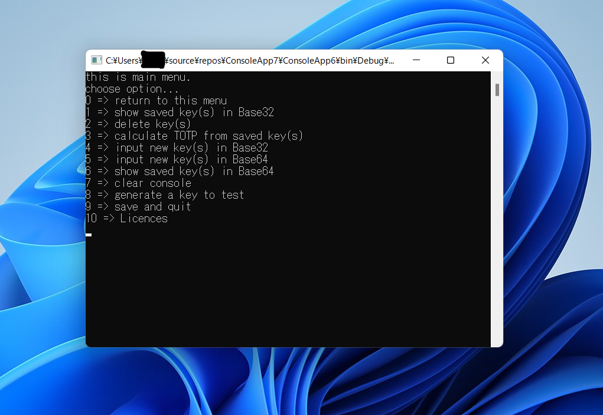
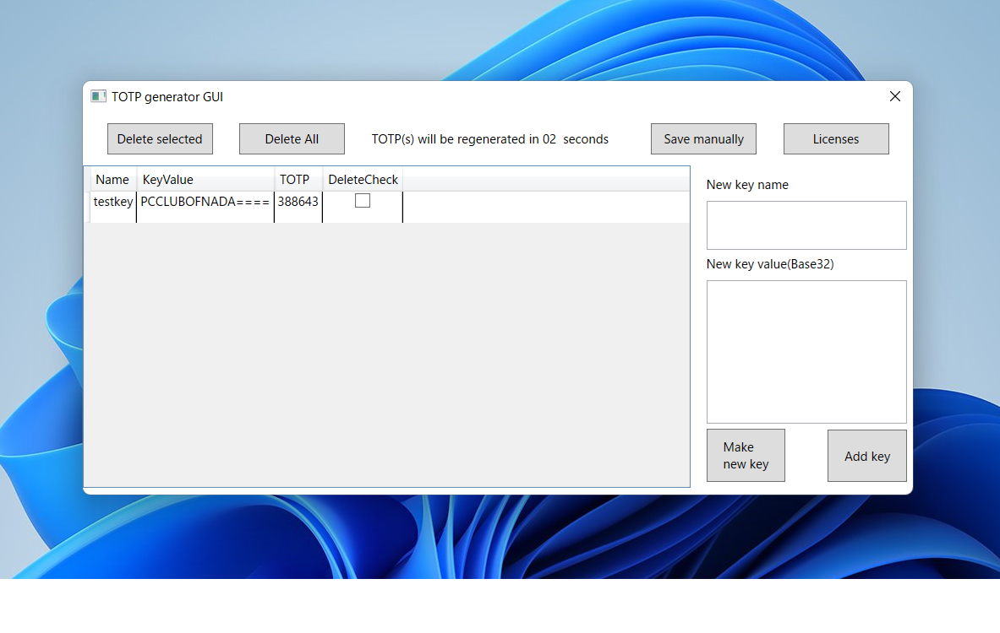

76回生 デカブツ
76回のデカブツです。気が付けば学校生活が2/3終わっていました。今年で20周年のC#という言語を触っています。この記事は入部後初めてのものとなりますので、多少拙いところがあると思いますが、暖かい目でご覧ください。
記事中に含めず外に置くことにしました。下のリンクから御覧ください。
https://github.com/testuser1111111-nd/LibraryforTOTP/blob/master/LibraryForTOTP.cs
多要素認証は、IPA(情報処理推進機構)のWebサイトによると、「各種インターネットサービスにおける不正ログイン対策として、複数の要素（記憶、所持、生体情報）を用いた認証方式」*5と述べられています。例えば、パスワードを入力した後にSMSやEメールで送られてくるコードを入力するというようなWebサイトは、多要素認証対応、などといった感じで呼べます。
HOTPは、上で述べられた「複数の要素」の内の一つとして使われる形式です。特徴としては、ユーザー側とサービス側で共有した鍵と特定の数字(サービス側で生成した乱数や生成した回数など)を使い、HMAC-SHA-1関数により生成される数桁の数字のパスコードを使って認証するというものです。
TOTPは、先ほどのHOTPの特定の数字を現在時刻から求めたカウンタに置き換え、パスコードを生成するものです。短時間で更新され、生成に使う特定の数字を共有しやすいという点により、HOTPよりもよく使われています。
スマホでTOTPを生成できるアプリとしては
パソコン上で生成できるアプリは、
などがあるそうです。
HMAC-SHA-1についての仕様は、文字数が大変なことになりそうなのでここでは大まかな内容しか伝えません。詳しく知りたい場合はIETFという団体のRFC2104という文書*1で示されているので見るといいと思います。
HMAC-SHA-1は鍵付きハッシュ関数(鍵と入力によって決まるランダムな短い出力を返す)の一部であり、SHA-1というハッシュ関数を元にして使われているものです。このHMAC-SHA-1というのは、基本的にオンライン上でメッセージが改ざんされていないかを確かめるのに使われていたらしいですが、ベースとなるSHA-1が古くなってきたため新しくSHA-2やSHA-3などを使ったものに取って代わられているようです。今回はC#に公式でこれを計算する機能(System.Security.Cryptography.HMACSHA1)があるので、それをそのまま使います。
TOTPとHOTPについての仕様は、細かいところまで書くと文字数が大変なことになりそうなのでここでは要約した内容しか書きません。詳しく知りたい場合はIETFという団体のRFC6238という文書*2とRFC4226という文書*3で示されているので見るといいと思います。
1. 鍵を読み込みます
2. 1970年1月1日午前0時0分0秒から現在の協定世界時(UTC)までの秒数を30で割りカウンタを求めます(なおこの時余りは切り捨てます)
3. 先ほどの鍵とカウンタをもとにHOTPを求めます(下のHOTPの場合を御覧ください。)
4. 求めたHOTPを出力します
1. 鍵とカウンタを読み込みます
2. 鍵とカウンタをHMAC-SHA-1関数を使ってメッセージ認証符号と呼ばれるバイト配列を取得します
3. 先ほど取得したバイト配列をDT関数(省略、特定の一部だけを切り取るものと考えてください。)を使って最大\( 2^{31}-1 \)の整数を求めます
4. 先ほど取得した整数を1000000で割り、6桁の数字を求めます。(6桁に満たない場合は0埋め)
5. 6桁の数字を出力します
と、非常に簡素な仕組みとなっています。上をそのまま実装した場合のC#でのコードは下の様です。
リスト1.1: TOTP.cs
using System;
using System.Security.Cryptography;
namespace LibraryForTOTP
{
public static class RFC6238andRFC4226
{
public static int GenTOTP(byte[] S, int adjust = 0, int span = 30)
{
TimeSpan time = DateTime.UtcNow - new DateTime(1970, 1, 1);
var counter = (long)time.TotalSeconds / span;
return GenHOTP(S, counter + adjust);
}
public static int GenHOTP(byte[] S, long C, int digit = 6)
{
var hmsha = new HMACSHA1();
hmsha.Key = S;
var counter = BitConverter.GetBytes(C);
Array.Reverse(counter, 0, counter.Length);
var hs = hmsha.ComputeHash(counter);
return DTruncate(hs) % (int)(Math.Pow(10, digit));
}
static int DTruncate(byte[] vs)
{
var offset = vs[vs.Length - 1] & 15;
var P = (vs[offset] << 24 | vs[offset + 1] << 16 | vs[offset + 2] << 8 | vs[offset + 3]) & 0x7fffffff;
return P;
}
}
}
コンピュータは基本的に0と1だけが連なった様式でデータを扱っています。先ほどのTOTPの生成の時に使う鍵もコンピュータ内では0と1だけで表されます。しかし、それらのデータを人間が扱う時、例えばWebページ上から書き写す時や、鍵を印刷しておくとき0と1だけで表された長ったらしい文字列を扱うのはハッキリ言って苦痛にしかなりません。
そこで、人間にとって扱いやすくなるよう、アルファベットと数字一つずつを、2のべき乗通りの個数の状態に対応させ1文字で表せるようにするのがBase●●というフォーマットです。
16通りの状態を1文字で表すBase16、32通りの状態を1文字で表すBase32、64通りの状態を1文字で表すBase64の3種類が基本的なものとなります。ちなみに、C#では、Base64での変換は公式で実装されていますが、Base32での変換は公式では実装されていません。(記事執筆時)
人間だけでなく、コンピュータ同士で単純な文字だけしか通信で送れない時にも使われます。その時は基本的にBase64が使われます。(例：電子メールや掲示板など)
これについても、詳しくはIETFという団体のRFC4648という文書*4で示されているので見るといいと思います。
今回は作ったアプリではBase32を使って、鍵を入力、保存できるようにしました。
Base32では、32通りのデータを基本的には下の表の組み合わせでアルファベットと数字に対応させます。
アルファベットは大文字と小文字どちらでもOKです。また、数字の0と1が使われていないのは、アルファベットのOとIとの見分けが付きにくいからという理由だそうです。
表1.1: 文字とデータの対応表
| 文字その1 | 対応するデータその1 | 文字その2 | 対応するデータその2 |
|---|---|---|---|
| A | 00000 | Q | 10000 |
| B | 00001 | R | 10001 |
| C | 00010 | S | 10010 |
| D | 00011 | T | 10011 |
| E | 00100 | U | 10100 |
| F | 00101 | V | 10101 |
| G | 00110 | W | 10110 |
| H | 00111 | X | 10111 |
| I | 01000 | Y | 11000 |
| J | 01001 | Z | 11001 |
| K | 01010 | 2 | 11010 |
| L | 01011 | 3 | 11011 |
| M | 01100 | 4 | 11100 |
| N | 01101 | 5 | 11101 |
| O | 01110 | 6 | 11110 |
| P | 01111 | 7 | 11111 |
1. Base32へ変換するデータを用意します。ここでは、各バイトを16進数で表して"78 84 BA 05 C5 68 06"とします。
2. データを5ビットごとに切り分けます。長さが足りない場合、右0埋めします。この場合2進数で"01111 00010 00010 01011 10100 00001 01110 00101 01101 00000 00011 00000"となります。
3. それぞれに対し、上のテーブルで対応する文字を探し、変換します。そうすると、"PCCLUBOFNADA"という文字列が出てきます。
4. 文字列の長さが8の倍数ではない場合はパディング文字(ここでは=)で文字列の右を埋めます。
5. すると"PCCLUBOFNADA===="という文字列が出てきます。これでBase32エンコードができました。
1. Base32に既に変換されている文字列を用意します。ここでは、"PCCLUBOFNADA===="という文字列から変換します。
2. 文字列を八文字ごとに切り分けます。これで、"PCCLUBOF" と "NADA====" に分けられます。
3. それぞれの切り分けられた文字列に対して、パディング文字の量から含んでいるバイトの個数を求めます。"PCCLUBOF"は、パディング文字が0個なので、5バイトの情報を含んでおり、"NADA===="は、パディング文字が4個なので、2バイトの情報を含んでいることとなります。
表1.2: パディングの数とバイトの数の対応
| パディングの数 | 普通の文字の数 | バイトの数 | 打ち間違えの可能性 |
|---|---|---|---|
| 0 | 8 | 5 | 低 |
| 1 | 7 | 4 | 低 |
| 2 | 6 | 高 | |
| 3 | 5 | 3 | 低 |
| 4 | 4 | 2 | 低 |
| 5 | 3 | 高 | |
| 6 | 2 | 1 | 低 |
| 7 | 1 | 高 |
4. それぞれの文字を5ビットのデータに変換します。対応の表は以下のようです
この表を使い、"PCCLUBOF"と"NADA===="を変換すると、それぞれ2進数で"01111000 10000100 10111010 00000101 11000101"と"01101000 00000110 0000"となります。
5. これらを手順3で求めたバイトの数分だけ切り出します。5バイト=40ビット、2バイト=16ビットなので、それぞれ、"01111000 10000100 10111010 00000101 11000101"と"01101000 00000110"と切り出されます。
6. これらを繋げて、16進数で表すと、"78 84 BA 05 C5"と"68 06"となりこれは最初に決めたデータと同じです。これで"PCCLUBOFNADA===="をデコードすることに成功しました
ということで、上二つを試すためにこんなアプリを作ってみました。
下のリンクからダウンロード出来るはずです
https://drive.google.com/file/d/1yErscqXR89zYREBKEsX5YLE4s4jbbC42/view?usp=sharing

図1.1: CUI版

図1.2: GUI版
どちらも、.NET6.0 の適切なランタイムが入っていれば動くはずです。(GUIの方はWindowsでしか動きません)
RFC2104 "HMAC: Keyed-Hashing for Message Authentication" by IETF :https://datatracker.ietf.org/doc/html/rfc2104
RFC6238 "TOTP: Time-Based One-Time Password Algorithm" by IETF :https://datatracker.ietf.org/doc/html/rfc6238
RFC4226 "HOTP: An HMAC-Based One-Time Password Algorithm" by IETF :https://datatracker.ietf.org/doc/html/rfc4226
RFC4648 "The Base16, Base32, and Base64 Data Encodings" by IETF :https://datatracker.ietf.org/doc/html/rfc4648
不正ログイン対策特集ページ by IPA(情報処理推進機構) :https://www.ipa.go.jp/security/anshin/account_security.html
[*1] RFC2104の参考URL:https://datatracker.ietf.org/doc/html/rfc2104
[*2] RFC6238の参考URL:https://datatracker.ietf.org/doc/html/rfc6238
[*3] RFC4226の参考URL:https://datatracker.ietf.org/doc/html/rfc4226
[*4] RFC4648の参考URL:https://datatracker.ietf.org/doc/html/rfc4648